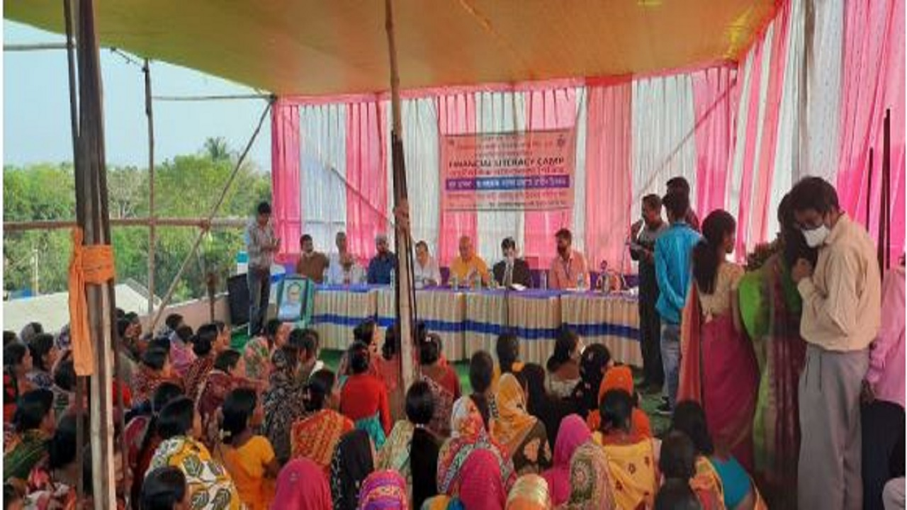
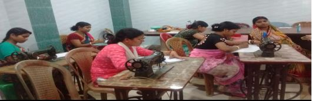
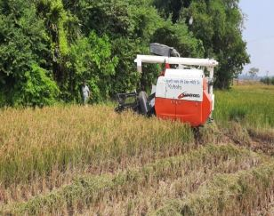

Murakata SKUS Ltd is a PACS under the affiliation of Govt. of West Bengal & VIDYASAGAR CENTRAL CO-OP BANK LTD. which was registered on 19/07/1952 (Reg. No-53-Mid), at vill-Murakata, PO-Nayagram Benasuli, Dist-Paschim Medinipur, PIN-721102, under the Cooperation Department.
It was started by 45 members, but now the member count is 1603. Initially, this society acted as a non-deposit credit society, but now it provides all kinds of deposit facilities through the CSP project.
Members of Murakata SKUS Ltd. enjoy CBS banking (NEFT/RTGS), and this PACS also provides Custom Hiring Centre (CHC) services to local farmers at cheap rates.
This PACS operates in 37 mouzas, mostly covered by forest. Most residents are below the poverty line, with farming as their main source of income. Five to six years ago, farmers used to cultivate single crops. Now, with Murakata SKUS Ltd.'s help—through KCC loans, crop insurance, and seasonal support—they cultivate throughout the year.